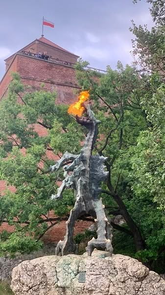
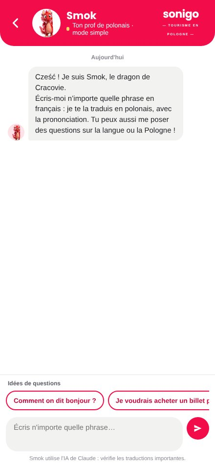
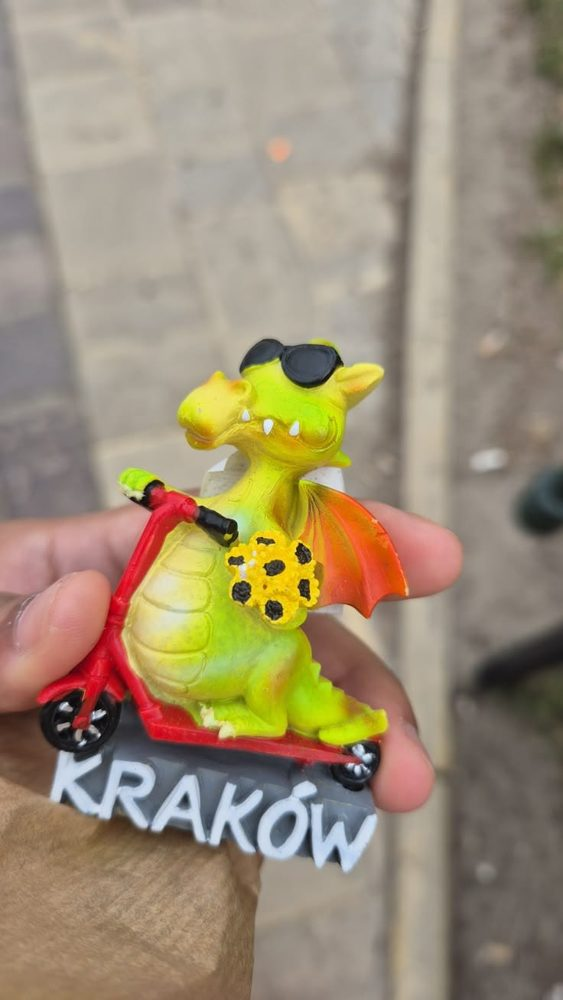

La légende de Smok, le dragon du Wawel
L'histoire que tous les enfants de Cracovie connaissent… et qui a donné son nom à notre mascotte.
Il était une fois, à Cracovie…
- 1
Un dragon sous la colline
Il y a très longtemps, sous la colline du Wawel, au bord de la Vistule, vivait un dragon dans une grande grotte. Chaque jour, il sortait pour dévorer les moutons et les vaches des habitants, et toute la ville de Cracovie avait peur.
- 2
Le roi Krak cherche un héros
Le roi Krak promit la main de sa fille, la princesse Wanda, à celui qui vaincrait le dragon. Les chevaliers les plus courageux essayèrent avec leurs épées et leurs lances… mais aucun ne revint.
- 3
Le cordonnier rusé
Un jeune cordonnier, Skuba, eut une idée. Il remplit une peau de mouton de soufre et la déposa devant la grotte. Le dragon, gourmand, l'avala d'un coup.
- 4
La Vistule jusqu'à la dernière goutte
Le soufre lui brûla le ventre. Assoiffé, le dragon courut boire l'eau de la Vistule… il but, et but encore, jusqu'à éclater ! Cracovie était sauvée, et le cordonnier devint un héros.
Sur les traces de Smok
La grotte du dragon
Descends dans la vraie grotte (Smocza Jama), sous le château, et ressors au bord de la Vistule.

Le dragon qui crache du feu
À la sortie de la grotte, une statue de Smok en bronze crache de vraies flammes.
Les « os du dragon »
À l’entrée de la cathédrale du Wawel, de vieux os sont accrochés : ce seraient ceux de Smok !


Ton compagnon pendant toute la visite
- Il t’accompagne en Pologne : dans l’appli, Smok est avec toi à chaque étape de ton circuit.
- Il t’explique ce que tu vois : l’histoire du château, de la place, de la grotte…
- Il t’apprend les mots utiles sur place : commander un café, demander ton chemin, dire merci.
- Il te donne des défis : « Dis bonjour en polonais au guide ! », « Trouve la statue qui crache du feu ! »
Le mur des voyageurs
Tu es allé voir le dragon à Cracovie ? Ajoute ta photo sur le mur de Smok !

Pour l’instant, ta photo s’affiche seulement sur ton écran, elle n’est envoyée nulle part.
Les mots de la légende
Pose toutes tes questions à Smok : il traduit en polonais tout ce que tu veux, avec la prononciation.
Parler avec Smok- Smok[smok]= Le dragon
- Smok Wawelski[smok va-vèl-ski]= Le dragon du Wawel
- Szewc[chèfts]= Le cordonnier
- Jaskinia[yas-ki-gna]= La grotte